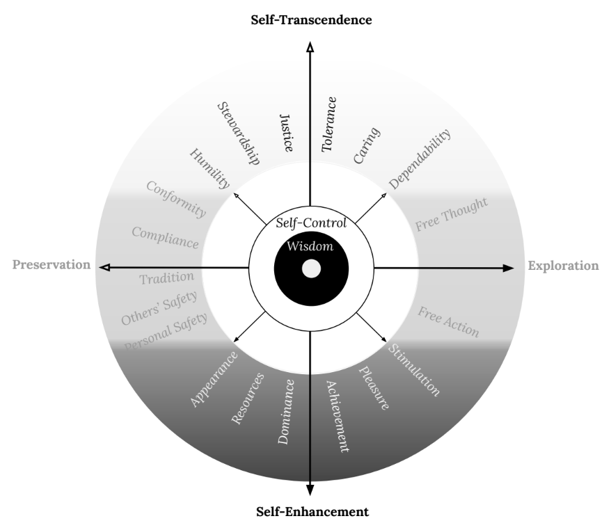

Sometimes I feel I am only this moment, where a small self peers out into the clamorous beauty of Reality: a threshold characterized by want. I want to see the next moment, I want to meet other people, I want to go out to the horizon. Sensing vastness outside of me accentuates the gaps that are within me, and those gaps resound with an echo we have come to call longing. “Longing, we say, because desire is full / of endless distances”.
This longing coaxes me to change… something… about myself, about my situation. I know that tiny changes are possible each conscious moment, every time I move through the cycle of sensing, choosing and acting on the world. To purposely shape this cycle, it helps to have a clear understanding of the patterns of behavior sculpting my personality. Yet I’m left with a larger question: What do I want to change into? In my last essay I asked the question “Who am I?”; now I want to turn to the question “What do I want to become?”. People want a lot of things, some good and some bad. On a good day, I want what leads to flourishing for me and those I love, but before we go there, let’s zoom out a bit.
A map of longing
The whole territory. Recalling my own litany of desires (some wholesome, some not so) won’t be particularly helpful. I may never have purely grasped the end of that thread that will lead to my flourishing. Better to piece together a bigger picture of longings from the collective views of others.
When Aristotle sketches out the various routes people take toward well-being, he often appeals to habits of speech, observing things like: “those with this trait are called…” or “this trait is uncommon, as shown by the fact that we lack a word for it.” He enlists these and other observations of human behavior with a keen eye for classification in the search for what we might consider a map of longing.
I like to think that Aristotle would enjoy current research into human values, and see it as an international, statistically-equipped extension of his own investigations. Researchers have asked many people many questions about the types of goals and desires they have, and used factor analysis to distill these down. The resulting set of basic directions for longing have been given distinct names and put into a scale. This scale is our most rigorous current map of human longing and, not surprisingly, it echoes words that we have used across centuries and cultures to discuss what we want to become.
What I’ve been calling a desire, a longing, or a goal, the scale refers to as a ‘value’. These values are intended to include the full range of directions that humans use to chart their courses. Because the list is descriptive and not prescriptive, it includes items that have historically been known as virtues and vices. Everyone, both ‘saint’ and ‘sinner’, wanders under these stars.
Values are broad goals that guide our lives. Or, put a bit more specifically, they are “trans-situational goals, varying in importance, that serve as guiding principles in the life of a person or other social entity”. Individual people can have values, but so can families, communities, organizations, or other groups.
Below is the full list of values defined in the Schwartz Value Scale (SVS), with simpler terms sometimes substituted, which I intend to use in this discussion moving forward:
| Dependability |
Being a reliable and trustworthy member of the in-group |
| Caring |
Devotion to the welfare of in-group members |
| Tolerance |
Acceptance and understanding of those who are different from oneself |
| Justice |
Commitment to equality, justice, and protection for all people |
| Stewardship |
Preservation of the natural environment |
| Humility |
Recognizing one’s limitations in the larger scheme of things |
| Conformity |
Avoidance of upsetting or harming other people |
| Compliance |
Compliance with rules, laws, and formal obligations |
| Tradition |
Maintaining and preserving cultural, family, or religious traditions |
| Others’ Safety |
Safety and stability in the wider society |
| Personal Safety |
Safety in one’s immediate environment |
| Appearance |
Security and power through maintaining one’s public image and avoiding humiliation |
| Resources |
Power through control of material and social resources |
| Dominance |
Power through exercising control over people |
| Achievement |
Personal success through demonstrating competence according to social standards |
| Pleasure |
Pleasure and sensuous gratification for oneself |
| Stimulation |
Excitement, novelty, and challenge in life |
| Free Action |
The freedom to determine one’s own actions |
| Free Thought |
The freedom to cultivate one’s own ideas and abilities |
These values are related to each other. The brilliance of this model is that all values are laid out in a circular continuum, so that each blends into the next. This means that values which are next to each other on the continuum are more highly correlated. For instance, if you value conformity to rules, you are more likely to also value cultural tradition. Values that are opposite each other on the wheel are less related; so that people valuing conformity are less likely to value free action.

So much that is human is here, distilled into the naive simplicity of a diagram: the petty conniving for power, the fear for your children’s safety, the striving for freedom, the savoring of wine and chocolate, the rites and communal celebrations. It shows the various ways we are tugged, as well as what keeps us awake at night, whether from thrills or fears. The great loom on which our longings are woven.
Values shape us as we reach for them. Achievement, safety, justice… these are not things that we can attain once and for all, but aspire to. Their fullness always seems to lie just beyond our reach. Yet they shape us even now, these visions we reach toward, as the light through the forest canopy shapes a sapling.
But can we choose what we reach for? Can we change what we value and shape ourselves into something new? If the values arrayed around this circle shade into one another, then it is possible for us to move our affections from one value to another. Perhaps I can choose a different light to lean toward, taking my current jumble of desires and aligning them, re-orienting them. Do I value being dependable, but think that caring is a higher calling? I may want to re-orient my desires.
Focus on flourishing
Paring down the list. Out of the whole array of values which we could hold, we have to choose some and not others. After all, many are in tension, or even conflict with each other. So if it’s possible to choose what we value, how will we make the choice?
In with the good, out with the bad. We can start with a most basic impulse, at the root of everything from our healthcare regimens to our religious rituals: the principle of “in with the good, out with the bad.” Our goal is to embody what is good and remove what is bad, leaving just good stuff. I’ll follow Aristotle and call this condition “flourishing”.
Flourishing together
Before we begin to call some values generally beneficial (or “healthy”) and others generally detrimental (or “unhealthy”), we have to ask “Beneficial for whom?” After all, I can do many things that benefit me but harm or neglect others.
It has to work for others, too. So I’m going to move forward with a definition of flourishing that is communal, seeking rescue from isolation and “the shipwreck of the singular.” Aspiring to flourish as a community, beyond the narrow vessel of the individual “self”, is a principal which should orient human life. Many have adopted this principal based on religious and cultural traditions, though you could just as easily choose it for its evolutionary benefits.
Because we need each other. Once we move beyond “bare survival” (i.e. zero-sum games), cooperation allows communities to flourish. It permits strategies such as improvisation, cultural transmission, and collective tools and rules.
All of which is a pragmatic way of saying “I am not enough.” I rely on others for my existence, and I want to give back; I long to become something which crests above the “tiny my-ness” I was gifted at birth. It’s as though I was granted my self as a ladder, to climb up its rungs and into a wider world: to transcend it.
Our senses point beyond our separate selves. All of the values listed above can, at least indirectly, be faint gestures toward this transcendence. The inclination toward physical pleasure may appear self-centered, but contains an erotic longing beyond myself. After all, when we really inspect its boundaries, the lines between myself and my surroundings is blurry at best. My survival, and flourishing, expands beyond my body into community, culture, ecosystem. Let’s consider whether some types of values or broad goals will tend to bring us nearer to collective flourishing.
Remove the bad
As much as we may chafe at characterizing commonly held values as “less-than” others, in practice we do this all the time. Imagine a job interview where the prospective candidate announced that their primary values were dominance over others and doing things that brought them pleasure. Or, imagine a friend calling to tell you “I’ve met someone and we want to get married. I think it’s a perfect match: he values his own appearance a lot and needs to be continually stimulated in order to stay interested.” Would you congratulate them?
It seems clear enough that not all values lead equally to collective flourishing.
Dark values
There are dark behavior patterns. In psychological research, certain behavioral patterns have been identified as running contrary to this goal. These patterns have been given a suggestive name: the Dark Triad (or Tetrad).
The use of the metaphor “dark” is worth dwelling on for a moment, since it points back to a old stock of images. The association of “darkness” with evil seems entwined with our bodies’ biological sense, which is to say, with our umwelt. The poem “One More Day” puts it emphatically:
should we discredit the idea for its modest origins?
Or should we say plainly that good is on the side of the living
And evil on the side of a doom that lurks to devour us?
Yes, good is an ally of being and the mirror of evil is nothing,
Good is brightness, evil darkness, good high, evil low,
According to the nature of our bodies, of our language.
An action associated with “darkness” is a retreat from others and the world into a self-contained loop (i.e. a ‘vicious cycle’). When Augustine sought to sum up the peculiar infirmity of the human species, he said that we were “curved in on ourselves”: homo incurvatus in se. Current research into dark personality patterns seems to agree.
We huddle in the darkness of ourselves. Various studies have investigated the relationship of the dark triad to both personality traits and values. We could think of personality traits as our inherited “nature” and of values as the learned “nurture” associated with these behavioral patterns. Based on this body of research, “dark” values are those which place oneself above others, rather than pursuing what is good for the broader community.
So which values tend toward darkness?
Darkness is a movement toward self-enhancing values. These values include pleasure, stimulation, achievement, resources, dominance, and appearance. The table below summarizes the values associated with dark triad personality profiles, as well as which profiles embrace those values:
| Stimulation |
Machiavellianism, Narcissism, Psychopathy |
| Pleasure |
Machiavellianism, Psychopathy |
| Achievement |
Machiavellianism, Narcissism, Psychopathy |
| Dominance |
Machiavellianism, Narcissism, Psychopathy |
| Resources |
Machiavellianism, Narcissism, Psychopathy |
| Appearance |
Narcissism |
Values are reinforced by our consistently-made choices. So, when we gravitate toward the values above, we also tend away from a number of other values.
Darkness is a move away from self-transcending values and communal traditions. Not surprisingly, it swerves clear of values such as Dependability, Caring, Tolerance, Justice, Stewardship, and Humility. Interestingly, darkness also eschews the value of tradition, disregarding collectively-developed conventions in favor of self-selected ones.
Darkness uses other people as disposable tools. It sees them as means toward an end, rather than as ends in themselves. Because of this, it typically views others through the lens of their “use value”, rather than as being intrinsically valuable.
Dark values combine to form a tangled web. As if to reinforce the maxim “what a tangled web we weave”, the structure of dark traits has recently been analyzed to show its structure. Darkness appears to be a network of mutually reinforcing traits, where self-centeredness and antagonism toward others combine with indifference, detachment, superiority, manipulation, thrill-seeking and other factors to form patterns that are harmful to collective life. The interplay of these negative patterns is reminiscent of what has been thoughtfully identified and warned against by spiritual manuals over the centuries.
Not all values are either dark or opposed to darkness. Before we are tempted to draw a line which separates all values into a battle of ‘good vs. evil’, it’s worth noting that darkness has an ambiguous relationship with some values, especially free thought and free action. This makes intuitive sense, because we can choose to act and think in a way that either harms or benefits others. Darkness also doesn’t seem to have a particularly strong relationship with valuing safety, whether others’ safety or that of you and your own family. This also seems intuitive, since safety is a basic need, even if it is commonly used to justify harm to others or unfair accumulation of resources.
We’ve seen that people’s darker tendencies move away from certain values, but there are reasons to prefer those values beyond the mere fact that they are “not bad”. I’m going to need this, since complying with a list of “do not’s” has never been particularly motivating for me.
Keep the good
There are many reasons to pursue what is good and beautiful, but in keeping with the approach I’ve tried to take so far, I’ll be relying on sociological and psychological research to sketch out the discussion.
A couple of influential recent theories suggest that moral rules provide us with an evolutionary advantage, helping communities to navigate complicated coordination problems. The first of these is Moral Foundations Theory, which seeks to undo some of the imposed Western lens of Enlightenment and colonial-era thinking by asking people from a wide array of cultures and social classes to define morality as they see it. As a result, they identified five areas of moral concern, clearly linked to the adaptive challenges of a social creature such as humans, which elicited clear moral emotions across multiple cultures. These ‘moral foundations’ are: (1) care for others, (2) fairness, (3) loyalty to group, (4) respect for authority, and (5) purity/sanctity.
The other theory, Morality-as-Cooperation, seeks to explain why we call certain actions good by imagining that the function of morality is to promote cooperation. It calls out several common types of cooperation: (1) sharing resources with family, (2) coordinating for mutual advantage, (3) social exchange, (4) resolving conflict through bravery, (5) resolving conflict through respect, (6) dividing resources, and (7) owning resources.
With these two definitions in hand, studies have investigated how these moral dimensions relate to values. The table below shows which values are more likely to lead to cooperation and collective flourishing:
| Dependability |
Mutualism |
Ingroup |
| Caring |
Reciprocity |
Care, Fairness |
| Tolerance |
N/A |
N/A |
| Justice |
Fairness |
Fairness |
| Stewardship |
N/A |
N/A |
| Humility |
N/A |
N/A |
| Conformity |
N/A |
N/A |
| Compliance |
Deference |
Authority, Purity |
| Tradition |
Deference |
Authority, Purity |
| Others’ Safety |
Kin altruism, Mutualism, Reciprocity |
Ingroup, Fairness |
| Personal Safety |
N/A |
Purity |
| Resources |
Property |
N/A |
It probably not surprising that the values related to moral issues are different than those related to the dark triad. For the most part, the values highlighted here don’t overlap with the ‘dark’ values noted above. If we know what direction we want to go, and we know what direction we don’t want to go, it sounds like we have…
A Compass

So far we have been talking about all longings or values which sway our decisions. Since some values contribute more positively to our lives with others, we arrive at something like a definition of “virtues” or “excellences” (ἀρετή in Greek). These virtues can be seen as descriptive, painting a picture of a beautiful way of life that has been tried and tested across cultures and time. They’re only prescriptive in a secondary way: reminding us of that beautiful striving when we tire or forget.
Virtues are those values which focus on collective flourishing. Since this requires thinking beyond individual wants, virtues are directed toward self-transcendence. These occupy the top of the compass: what I want to head towards.
Transcend or Control: the vertical axis